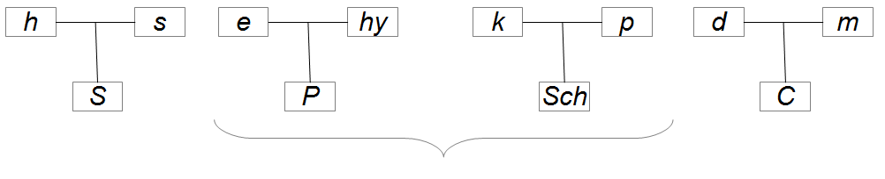

Though the Szondi test has been used by psychologists and psychiatrists for nearly seventy years, it still lacks scientific evidence relating to its reliability and validity. Its professional use is thus questionable. For this study, we collected Szondi test protocols for 433 inmates detained in Belgian prisons. We propose an accurate scoring system coherent with classical approach allowing thorough statistical analysis. We present descriptive statistics for each Szondi variables, study the links between the more important ones and the effect of age, sex and legal status on them. This study opens the gate for validity studies compatible with actual psychometrical methods.

The Szondi test is a projective personality test, mapping the unconscious drive structure of an individual by assessing the level of fate-analytical variables of Leopold Szondi’s theory. Methodologically the Szondi test is a photo-card-sorting measure in which the participants have to express their preference (positive or negative) towards the presented faces on the cards. There are six series of eight cards. Each card represents the face of a distinct psychopathological class. The Szondi test has four vectors, all of them containing two facets in which the preference of participants can be either positive or negative. The test is ideally proposed ten times to each subject. Consequently, there are ten profiles in one protocol. The test was first created by Szondi around 1935 and mostly used as a clinican assessment tool after 1945.
The test material remained unchanged until today, but its methods of interpretation have changed over time, especially under the influence of psychologists of the Leuven school such as Jacques Schotte, Philippe Lekeuche, Michel Legrand, Jean Mélon, etc. The test had a limited diffusion, rather confidential and badly studied. The application of this test by psychiatrists and psychologists around the world is precisely unknown. The test was also studied in the United States of America after it was introduced there by a Hungarian psychologist, Susan Deri. However, the test has survived through the decades and continues to rise interest and even excitement for some mental health professionals. It proposes a theory of personality influenced by psychoanalysis and philosophy that fits particularly well to case studies. An important question remains so far: what are the scientific bases of the test. Lekeuche and Mélon (1990), actually note that “Szondi does not tell us how he came to build his drive pattern”, which is the basis of psychological interpretations. According to Legrand (1979), “empirical and clinical validity of the Szondi test as a diagnostic tool remains intact” (p.175). Lekeuche and Mélon (1990) explain that the method of validating a test such as the Szondi test should apply upon the overall theory underlying it. According to them, “the few isolated experiments that once claimed to permanently invalidate the Szondi were conducted without rigor and misunderstood the szondian theory” (p.195). Classically, studies involving the Szondi test consist of collecting responses from participants from different groups: spasmophilia (Gilson and Holvoet 1986), patients with anxiety neurosis, or anxiety hysteria (Paisane 1977), etc. A study by Goncalves, Kiss, and Kaplar (2010) compares the scores obtained by 126 Hungarians and 176 Portuguese who took the test on a voluntary basis and who did not come from clinical samples. They report prevalences (in percentages) for each drive position in the two samples. For example, 38.5 % of Hungarians and 44.1 % of Portuguese have h+. This difference is not significant at the .05 threshold at Mann-Whitney U. Regarding the m+ position, it is present in 66.4 % of Hungarians and 77.5 % of Portuguese. This difference is significant at .001 with the Mann-Whitney U test. The advantage of this study is to propose data that can be considered normative for two populations even if we can deem those samples as quite small. In addition, context of data collection is not clearly defined in the report of their study. Siso (2008) collected 335 clinical cases and used the vectoral valences to predict psychiatric diagnostic with a discriminant analysis and a logistic regression: “the validity of the test of Szondi, relative to diagnostic groups, is located around 0,80” (p. 89). The usual method of validating the Szondi test consists in comparing frequency of the drive positions of one group with that of another group. Significant differences (often using an independence test such as \({\chi}^2\)) thus serve to emit psychological hypotheses on the pathological groups but also to validate the szondian theory de facto. One problem with this method is that the researcher finds himself testing hypotheses on the groups involved at the same time as on the measurement tool. It may seem risky to test groups with a tool whose reliability and validity are not precisely known. Interpretation manuals frequently used for the Szondi test such as Deri (1949) and Derleyn (2008) never address the question of reliability and validity of the test. Of course, this silence around the psychometric qualities of the Szondi test calls for caution and even suspicion. In the absence of more specific information in this regard, use of the test by professionals should be discouraged. However, test validation methods have undergone significant changes in recent years. We did not find any recent studies adressing psychometric qualities of the Szondi test. The aim of this study is to assess psychometric properties of the szondian variables on a large sample. It focuses on the reliability and not (yet) on the validity of these variables. Indeed, reliability is of prior interest because there cannot be valid variables without reliable ones Dean (1992). One important concern for us was to adapt classical szondian variables so that they can be used with actual statistical processing. We had therefore to get back to the szondian theory that relies on a psychoanalytic point of view of the drive: the energy involved in a specific drive can accumulate (inducing a tension) and tends towards a discharge. Szondi was inspired by Freud (1920) for this matter.
In the psycho-analytical theory of the mind we take it for granted that the course of mental processes is automatically regulated by ‘the pleasure-principle’: that is to say, we believe that any given process originates in an unpleasant state of tension and thereupon determines for itself such a path that its ultimate issue coincides with a relaxation of this tension, i. e. with avoidance of ‘pain’ or with production of pleasure.” .
This assumption led to a need-system (Guertin 1950) in which tensions are quantifications of the needs. In the szondian theory, there are four drive vectors, each containing two factors. Table 1 presents the four vectors and the eight factors. There are four valences for each of the eight factors: (a) positive choice, (b) negative choice, (c) discharge and (d) ambivalence.
| Sexual (S) | Paroxysmal (P) | Ego (Sch) | Contact (C) |
|---|---|---|---|
| h s | e hy | k p | d m |
For instance, m+ (in the Contact vector) means that the m drive is tensed while m0 means that the tension in the m drive is not present. The test specifies also the direction of tension: it may be m+ (most of m pictures are seen as sympathetic) or m- (most of m picture are seen as antipathic). If some of the m are seen as sympathetic and some of them are seen as antipathic, the code is m\({\pm}\) which is called an ambivalence. Classically, each drive position is coded with these signs: 0, +, -, \({\pm}\), +!, +!!, -!, -!! or \({\pm}\)! We count nine modalities for each variable. Note that reality of choices behind one code may be different. For example, 0 can mean that no choice was made in the drive. It can also mean that only one sympathetic or antipathic was made. The code 0 is the same for four different situations. From our point of view, we lose some information that may be considered negligible by some but not by us. Consequently, we wished to respect proper choices made by the participants. We therefore refined the way the variable is assessed in respect with the accurate choices. For example, one m seen as sympathetic and one m seen as antipathic will have a slightly different score than no m chosen at all. In this paper, we will describe how we calculated each variable and give the statistical properties of it.
Participants of this study are 433 inmates detained in Belgian prisons. The Szondi test was obtained during a comprehensive psychological assessment prior any conditional release. The psychologist in charge of the psychological assessment met the inmate in a quiet and private office. Preliminary psychological interviews assessed cooperation of the inmate. In this study, we asked psychologists of the psychosocial service1 to provide Szondi protocols (with ten profiles) they had previously administered. Anonymized protocols were gathered by a member of the Psychosocial Service and prepared for data analysis. This study aimed to receive as many completed tests as possible. This sample therefore has a weakness: criterion for administration of the Szondi test was not strictly controlled. It is conceivable that psychologists have administered the Szondi test to the most collaborative inmates. Some inmates may be reluctant to pass any psychological test. However, we find that the Szondi test is often well accepted by most inmates. Personality assessment only takes place after a court decision (conviction or internment). Inmates in custody are not tested by the Psychosocial Service. Therefore, participants in our sample have been held in detention for months or even years. This is important because it implies that our sample is not representative of inmates who face the psychological stress of recent incarceration. Indeed, incarceration is a difficult time for most inmates, who discover a new, isolated and often violent world. Participants in our study are aware of prison rituals and probably overcame the shock they experienced when they were arrested. Eligible for conditional release, they start a project in order to be released from prison. Some inmates refuse psychosocial interviews or are considered as too dangerous to allow interviews. Therefore, these inmates have not been tested. These situations happen seldom and are often transient. It may take several months before these meetings are possible. Our total sample counts 409 (94 %) men and 24 (6 %) women.
Mean age of our sample is equal to 38.06 years (SD = 11.46, min = 18, max = 79). Concerning the legal status, 390 (90 %) had been sentenced to prison and 41 (9%) had been interned (which means they were seen as irresponsible by the judges because of mental illness - they are Mentally Ill Offenders, MIO). Note that in Belgium MIO might stay in prison, waiting for a proper therapeutic project to be available. The number if inmate having both status was equal to 1.
Every inmate agreed on the psychological assessment and the Szondi test because prison psychologists have to build a collaborative relationship with inmates who have an active role in the assessment. They remain free to refuse psychological interviews or to refuse any particular test. Psychologists anonymized and gave a code to their protocols before sending them to one member of the psychosocial service. The global database only contains the inmate code, szondian variables, age, sex and legal status. It is therefore impossible to identify a single case from the database.
Table 2 and Table 3 are the key figures to label our basic variables for each participant. These tables look like some excel files that encodes Szondi protocols.
| h | s | e | hy | k | p | d | m | ||
|---|---|---|---|---|---|---|---|---|---|
| one | p | onehp | onemp | ||||||
| m | |||||||||
| two | p | ||||||||
| m | |||||||||
| three | p | ||||||||
| m | |||||||||
| four | p | ||||||||
| m | |||||||||
| five | p | fiveep | |||||||
| m | |||||||||
| six | p | ||||||||
| m | |||||||||
| seven | p | ||||||||
| m | |||||||||
| height | p | ||||||||
| m | |||||||||
| nine | p | ||||||||
| m | |||||||||
| ten | p | ||||||||
| m | tenhm | tenmm |
| h | s | e | hy | k | p | d | m | |||
|---|---|---|---|---|---|---|---|---|---|---|
| one | p | onehpekp | onempekp | ekp | ||||||
| m | ekp | |||||||||
| two | p | ekp | ||||||||
| m | ekp | |||||||||
| three | p | ekp | ||||||||
| m | ekp | |||||||||
| four | p | ekp | ||||||||
| m | ekp | |||||||||
| five | p | fiveepekp | ekp | |||||||
| m | ekp | |||||||||
| six | p | ekp | ||||||||
| m | ekp | |||||||||
| seven | p | ekp | ||||||||
| m | ekp | |||||||||
| height | p | ekp | ||||||||
| m | ekp | |||||||||
| nine | p | ekp | ||||||||
| m | ekp | |||||||||
| ten | p | ekp | ||||||||
| m | tenhmekp | tenmmekp | ekp |
There are 160 variables for the foreground (VGP) and 160 variables for the background (EKP). This means that we have (160 + 160 =) 320 variables pour each participant. Theses variables are the bricks used to calculate the szondian scores. As we can see, every variable has a name that takes into account four pieces of information:
For example: onehp (profile one, number of h seen positively) is the number of h pictures seen as sympathetic at first profile in the foreground. In the same way, tenmmekp (profile ten, number of m seen as minus at the ekp) is the number of m pictures seen as antipathic at the tenth profile in the background. We calculated the scores and analysed data with the R program (R Core Team 2013).
Tables 4 and 5 show the mean and the standard deviation for each of our 320 variables respectively at the VGP and EKP.
| h | s | e | hy | k | p | d | m | ||
|---|---|---|---|---|---|---|---|---|---|
| one | p | 2.14 (1.29) | 1.8 (1.12) | 1.14 (0.88) | 0.82 (0.82) | 1.12 (0.75) | 1.15 (1.1) | 1.03 (1.02) | 2.79 (1.27) |
| m | 0.75 (0.92) | 1.94 (1.24) | 1.47 (0.93) | 2.22 (1.12) | 2.05 (1.01) | 1.55 (1.13) | 1.23 (0.99) | 0.8 (0.93) | |
| two | p | 2.27 (1.3) | 1.51 (1.11) | 1.3 (0.84) | 0.78 (0.82) | 1.17 (0.81) | 1.11 (1.09) | 1.12 (0.96) | 2.74 (1.33) |
| m | 0.75 (0.82) | 2.01 (1.33) | 1.36 (0.92) | 2.38 (1.13) | 2.06 (1.09) | 1.54 (1.13) | 1.13 (0.98) | 0.76 (0.84) | |
| three | p | 2.16 (1.31) | 1.55 (1.21) | 1.29 (0.82) | 0.79 (0.81) | 1.18 (0.77) | 1.15 (1.06) | 1.14 (1) | 2.72 (1.32) |
| m | 0.83 (0.97) | 1.97 (1.37) | 1.44 (0.94) | 2.28 (1.07) | 2.03 (1.1) | 1.44 (1.08) | 1.24 (1.1) | 0.78 (0.86) | |
| four | p | 2.12 (1.29) | 1.49 (1.17) | 1.33 (0.83) | 0.87 (0.86) | 1.23 (0.77) | 1.14 (1.03) | 1.16 (1) | 2.66 (1.25) |
| m | 0.75 (0.88) | 2.01 (1.32) | 1.44 (0.93) | 2.32 (1.09) | 2.01 (1.06) | 1.45 (1.16) | 1.21 (1.03) | 0.82 (0.86) | |
| five | p | 2.13 (1.38) | 1.47 (1.18) | 1.33 (0.85) | 0.88 (0.91) | 1.21 (0.82) | 1.14 (1.09) | 1.17 (1) | 2.68 (1.33) |
| m | 0.83 (0.96) | 2.03 (1.36) | 1.47 (0.97) | 2.25 (1.1) | 2 (1.08) | 1.35 (1.14) | 1.29 (1.03) | 0.78 (0.82) | |
| six | p | 2.15 (1.49) | 1.46 (1.22) | 1.3 (0.9) | 0.89 (0.84) | 1.25 (0.86) | 1.14 (1.06) | 1.12 (1.03) | 2.66 (1.31) |
| m | 0.78 (0.94) | 2.03 (1.4) | 1.4 (0.9) | 2.3 (1.04) | 1.96 (1.08) | 1.43 (1.12) | 1.26 (1.09) | 0.84 (0.88) | |
| seven | p | 2.09 (1.42) | 1.52 (1.23) | 1.31 (0.91) | 0.91 (0.79) | 1.23 (0.82) | 1.15 (1.08) | 1.07 (0.99) | 2.73 (1.28) |
| m | 0.84 (0.99) | 1.99 (1.42) | 1.43 (0.98) | 2.31 (1.07) | 1.93 (1.1) | 1.44 (1.12) | 1.24 (1.04) | 0.82 (0.88) | |
| eight | p | 2.17 (1.41) | 1.42 (1.18) | 1.25 (0.88) | 0.87 (0.87) | 1.2 (0.81) | 1.15 (1.07) | 1.2 (0.98) | 2.74 (1.28) |
| m | 0.8 (0.96) | 2 (1.45) | 1.51 (0.93) | 2.27 (1.05) | 2.02 (1.14) | 1.39 (1.12) | 1.2 (1) | 0.81 (0.84) | |
| nine | p | 2.12 (1.42) | 1.49 (1.21) | 1.3 (0.87) | 0.88 (0.85) | 1.16 (0.77) | 1.23 (1.08) | 1.12 (1) | 2.69 (1.28) |
| m | 0.82 (1.03) | 2.04 (1.47) | 1.42 (0.93) | 2.33 (1.08) | 2 (1.12) | 1.29 (1.12) | 1.27 (1.07) | 0.85 (0.85) | |
| ten | p | 2.09 (1.47) | 1.39 (1.14) | 1.32 (0.87) | 0.87 (0.85) | 1.26 (0.85) | 1.2 (1.08) | 1.16 (1.01) | 2.71 (1.31) |
| m | 0.85 (1.01) | 2.01 (1.45) | 1.41 (0.92) | 2.33 (1.09) | 1.94 (1.15) | 1.41 (1.15) | 1.26 (1.06) | 0.79 (0.83) |
| h | s | e | hy | k | p | d | m | ||
|---|---|---|---|---|---|---|---|---|---|
| one | p | 1.98 (1.28) | 1.06 (0.97) | 1.58 (1.03) | 1.22 (0.88) | 1.25 (0.91) | 1.68 (1.04) | 1.78 (1.17) | 1.44 (1.04) |
| m | 1.14 (1) | 1.19 (1.02) | 1.81 (1.06) | 1.74 (1.17) | 1.57 (1.03) | 1.63 (1.05) | 1.96 (1.15) | 0.97 (0.95) | |
| two | p | 1.81 (1.18) | 1.17 (0.98) | 1.61 (1.05) | 1.2 (0.86) | 1.18 (1) | 1.72 (1.06) | 1.7 (1.14) | 1.6 (1.04) |
| m | 1.18 (1) | 1.31 (1) | 1.73 (1.04) | 1.63 (1.16) | 1.6 (1.14) | 1.61 (1.1) | 2.04 (1.14) | 0.89 (0.87) | |
| three | p | 1.89 (1.26) | 1.14 (0.99) | 1.6 (0.95) | 1.21 (0.99) | 1.28 (1.06) | 1.71 (1.14) | 1.71 (1.19) | 1.46 (1.01) |
| m | 1.12 (0.99) | 1.33 (1.01) | 1.67 (1.06) | 1.72 (1.13) | 1.51 (1.12) | 1.72 (1.09) | 1.9 (1.12) | 1.03 (0.96) | |
| four | p | 1.9 (1.25) | 1.12 (1.01) | 1.62 (1.02) | 1.19 (0.98) | 1.21 (1) | 1.75 (1.17) | 1.69 (1.17) | 1.52 (1.08) |
| m | 1.23 (1.12) | 1.38 (0.99) | 1.6 (0.98) | 1.62 (1.09) | 1.55 (1.04) | 1.67 (1.1) | 1.94 (1.2) | 1.01 (0.91) | |
| five | p | 1.86 (1.27) | 1.16 (0.97) | 1.62 (1.05) | 1.18 (0.93) | 1.16 (0.99) | 1.75 (1.16) | 1.7 (1.15) | 1.55 (1.07) |
| m | 1.18 (1.06) | 1.34 (0.99) | 1.58 (1.06) | 1.69 (1.1) | 1.62 (1.08) | 1.76 (1.18) | 1.84 (1.1) | 1 (0.94) | |
| six | p | 1.89 (1.3) | 1.11 (1.03) | 1.57 (1.07) | 1.19 (0.96) | 1.23 (1.08) | 1.67 (1.1) | 1.8 (1.17) | 1.54 (1.03) |
| m | 1.18 (1.11) | 1.4 (1.02) | 1.73 (1.04) | 1.62 (1.05) | 1.52 (1.08) | 1.77 (1.08) | 1.81 (1.12) | 0.97 (0.9) | |
| seven | p | 1.82 (1.25) | 1.09 (0.98) | 1.54 (1.08) | 1.26 (0.99) | 1.22 (1.05) | 1.8 (1.18) | 1.78 (1.12) | 1.5 (1.09) |
| m | 1.25 (1.08) | 1.4 (1.05) | 1.72 (1.05) | 1.53 (1) | 1.61 (1.03) | 1.62 (1.14) | 1.9 (1.2) | 0.96 (0.89) | |
| eight | p | 1.86 (1.28) | 1.16 (1.04) | 1.55 (1.06) | 1.14 (0.93) | 1.28 (1.07) | 1.78 (1.16) | 1.69 (1.15) | 1.53 (1.01) |
| m | 1.18 (1.08) | 1.42 (1.05) | 1.68 (1.04) | 1.71 (1.04) | 1.51 (1.07) | 1.69 (1.14) | 1.89 (1.14) | 0.93 (0.92) | |
| nine | p | 1.88 (1.23) | 1.17 (1.05) | 1.57 (1.05) | 1.18 (1) | 1.28 (1.04) | 1.72 (1.09) | 1.76 (1.17) | 1.47 (1.05) |
| m | 1.19 (1.04) | 1.31 (1.03) | 1.71 (1.1) | 1.61 (1.04) | 1.58 (1.09) | 1.76 (1.11) | 1.85 (1.17) | 0.98 (0.93) | |
| ten | p | 1.87 (1.26) | 1.21 (1.04) | 1.54 (1.05) | 1.18 (0.88) | 1.29 (1.05) | 1.69 (1.06) | 1.75 (1.14) | 1.48 (1.01) |
| m | 1.2 (1.08) | 1.39 (1.05) | 1.73 (0.98) | 1.61 (1.04) | 1.51 (1.03) | 1.7 (1.09) | 1.82 (1.16) | 1.03 (0.95) |
Tropisms are the number of choices made at the foreground for each factor and for each vector. We propose this formula to compute the tropisms for the h factor:
\[\begin{gathered} tropismh = (onehp+onehm+twohp+twohm+threehp+threehm+\\ fourhp+fourhm+fivehp+fivehm+sixhp+sixhm+sevenhp+sevenhm\\ +eighthp+eighthm+ninehp+ninehm+tenhp+tenhm)\\ / (24*number of profiles) \end{gathered}\]
The formula is the same for the other factors by replacing h by the letter of the factor (for example s, hy, etc.). We divided the sum of choices made in a single factor by 240 to highlight proportions of the choices for each profile. The score reflects then the percentages of choices for each profile. For example, participants have chosen 15% of the m pictures at the foreground for the ten profiles.
Concerning vector tropisms, here is the formula:
\[\begin{gathered} Sexual Tropism = tropismeh+tropismes \end{gathered}\]
Table 6 shows descriptive statistics for each factor and vector.
| Tropisms | Mean | SD |
|---|---|---|
| Sexual tropisms | 0.27 | 0.05 |
| Paroxysmal tropisms | 0.24 | 0.04 |
| Ego tropisms | 0.24 | 0.04 |
| Contact tropisms | 0.24 | 0.04 |
| h | 0.12 | 0.04 |
| s | 0.15 | 0.03 |
| e | 0.11 | 0.03 |
| hy | 0.13 | 0.03 |
| k | 0.13 | 0.03 |
| p | 0.11 | 0.03 |
| d | 0.1 | 0.03 |
| m | 0.15 | 0.03 |
The drive tension gives a piece of information about the direction of drive. Classically, it is noted + or -. To calculate this score, we referred to Bandi, Bolgar, and Laszlo (2017, 111) who proposed this formula:
\[\begin{gathered} Factor driving = (sum of the positive answers on the chosen factor) + \\ ((- 1) * sum of the negative answers on the chosen factor) \end{gathered}\]
In our case, here is the formula for the h factor:
\[\begin{gathered} tensionhp = onehp+twohp+threehp+fourhp+fivehp+sixhp\\ +sevenhp+eighthp+ninehp+tenhp\\ tensionhm = onehm+twohm+threehm+fourhm+fivehm+sixhm\\ +sevenhm+eighthm+ninehm+tenhm \end{gathered}\]
These formulas sum the choices of h pictures seen as sympathetic (tensionhp) and antipathic (tensionhm) for the ten profiles. Eventually, we applied the following formula:
\[\begin{gathered} tensionh = \frac{tensionhp-tensionhm}{Number of profiles} \end{gathered}\]
In our case, the number of profiles is equal to ten. The score theorically varies from -6 to +6.
Table 7 shows descriptive statistics for the drive tension for each factor relating to the ten profiles. It is therefore a global score.
| Drive tension | Mean | SD |
|---|---|---|
| h | 1.35 | 1.54 |
| s | -0.49 | 1.87 |
| e | -0.15 | 0.87 |
| hy | -1.45 | 1.1 |
| k | -0.8 | 1.02 |
| p | -0.27 | 1.41 |
| d | -0.1 | 1.14 |
| m | 1.91 | 1.43 |
The ambivalence was harder to score because we wanted to have a more accurate score than the classical \({\pm}\) and \({\pm}\)!. We propose to use this formula:
\[\begin{gathered} ambivalence = 3 - \\ (absolute value (nb of sympathetic pictures for the specific factor \\ - nb of antipathic pictures for the specific factor)/2 \\ + (6- nb of sympathetic pictures for the specific factor \\ - nb of antipathic pictures for the specific factor)/2 \end{gathered}\]
Here is an example for the h factor at the first profile:
\[\begin{gathered} ambioneh = 3-(((abs(onehp-onehm))/2)+((6-onehp-onehm)/2)) \end{gathered}\]
This ambivalence score varies from 0 (no ambivalence) to 3 (maximum ambivalence, which means that three pictures have been considered sympathetic and three other pictures have been considered as antipathic for the same factor).
This formula calculates the mean of the ambivalence scores for all the profiles. Here is the formula for the h factor:
\[\begin{gathered} ambih = ambioneh+ambitwoh+ambithreeh+ambifourh+ambifiveh \\ +ambisixh+ambisevenh+ambieighth+ ambinineh+ambitenh\\ / Number of profiles \end{gathered}\]
Concerning the ambivalence in the vector, we compute the mean of the two factors. For example, here is the formula for the sexual vector:
\[\begin{gathered} Sexual ambivalence = \frac{ambih+ambis}{2} \end{gathered}\]
Table 8 shows prevalences of each score for each factor.
| Szondi variable | Mean | SD |
|---|---|---|
| Sexual | 0.68 | 0.31 |
| Paroxysmal | 0.76 | 0.28 |
| Ego | 0.75 | 0.26 |
| Contact | 0.6 | 0.28 |
| h | 0.52 | 0.4 |
| s | 0.83 | 0.47 |
| e | 0.83 | 0.34 |
| hy | 0.7 | 0.44 |
| k | 0.93 | 0.4 |
| p | 0.57 | 0.41 |
| d | 0.56 | 0.35 |
| m | 0.64 | 0.41 |
In order to qualify how participant relates to each drive, we propose to use simultaneously the three scores that we just presented. The primary score is tropism because it informs on the choices made in a specific facet. If tropism is equal to zero, it means that there is a discharge in this facet. There cannot be any significant tension nor ambivalence. When tropism increases, there are two possibilities: (a) drive tension or (b) ambivalence. The two other scores discriminate one possibility from the other. We have therefore to take into account the three scores.
In the Szondi test, choices made by participants may differ from one profile to the other. It is therefore important to assess the variability for each profile and for the whole protocol. The first score compares choices made at the second profile with choices made at the first profile. Everytime one more or less picture has been chosen, the score increased by one point, for every facet. For example: at the first profile, one participant has chosen two h pictures as sympathetic and one h picture as antipathic. At the second profile, the same participant has chosen three h pictures as sympathetic and no h picture as antipathic. The variability score for h at the second profile will be equal to 2. The formula is this one for the variability of h at the second profile:
\[\begin{gathered} variahtwo = |twohp-onehp|+|twohm-onehm| \end{gathered}\]
We calculate the same score for the eight facets in order to assess the variability at the second profile with this formula:
\[\begin{gathered} variatwo = variahtwo + variastwo + variaetwo + variahytwo \\ + variaktwo + variaptwo + variadtwo + variamtwo \end{gathered}\]
Eventually, we obtain nine variability scores, the last one being the variability between the ninth profile and the tenth profile. These nine variability scores are used to assess the mean variability score for the whole protocol with this formula:
\[\begin{gathered} Variability = \frac{variatwo+variathree+variafour+variafive}{9}\\ \frac{+variasix+variaseven+variaeight+varianine+variaten}{9} \end{gathered}\]
This last score is the most interesting for us now. In our sample, the mean global variability score is equal to 14.58 (SD = 3.12, min = 6, max = 29.44).
Are the four different vector tropisms linked in a way or another considering the tropism? Table 9 presents the correlation matrix for the four vectors. As we can see, when one vector increases, the others are prone to decrease. It seems to be mostly the case for the Sexual vector and the Contact vector for which correlation is equal to -0.53 (p < .001).
| Sexual | Paroxysmal | Ego | Contact | |
|---|---|---|---|---|
| Sexual | 1 | -0.35(p<.001) | -0.41(p<.001) | -0.53(p<.001) |
| Paroxysmal | 1 | -0.25(p<.001) | -0.17(p<.001) | |
| Ego | 1 | -0.23(p<.001) | ||
| Contact | 1 |
Are the eight factor tropisms also linked in a way or another? Table 10 presents the correlation matrix for the eight factors tropisms. As we can see, when one factor increases, the others are prone to decrease. It seems to be mostly the case for the h factor and the m factor for which the correlation is equal to -0.41 (p < .001). The first is part of the Sexual vector and the latter is part of the Contact vector.
| h | s | e | hy | k | p | d | m | |
|---|---|---|---|---|---|---|---|---|
| h | 1 | -0.02 (p = 0.73) | -0.16(p<.001) | -0.25(p<.001) | -0.3(p<.001) | -0.07 (p = 0.12) | -0.08 (p = 0.1) | -0.41(p<.001) |
| s | 1 | -0.03 (p = 0.6) | -0.18(p<.001) | -0.28(p<.001) | -0.07 (p = 0.13) | -0.23(p<.001) | -0.26(p<.001) | |
| e | 1 | -0.15(p<.001) | -0.2(p<.001) | -0.04 (p = 0.45) | -0.12 (p = 0.01) | -0.11 (p = 0.02) | ||
| hy | 1 | 0.06 (p = 0.18) | -0.24(p<.001) | -0.07 (p = 0.17) | -0.01 (p = 0.88) | |||
| k | 1 | -0.22(p<.001) | -0.14(p<.001) | 0.15(p<.001) | ||||
| p | 1 | -0.24(p<.001) | -0.14(p<.001) | |||||
| d | 1 | -0.13(p<.001) | ||||||
| m | 1 |
Tropisms and drive tensions do not have the same psychological interpretation in the szondian theory. It may then be useful to consider them differently. Do tension scores for the eight factors share common links? Table 11 presents the correlation matrix for the eight factors tensions.
| h | s | e | hy | k | p | d | m | |
|---|---|---|---|---|---|---|---|---|
| h | 1 | 0.08 (p = 0.08) | -0.18(p<.001) | -0.33(p<.001) | -0.35(p<.001) | -0.26(p<.001) | -0.09 (p = 0.06) | -0.25(p<.001) |
| s | 1 | -0.21(p<.001) | -0.4(p<.001) | -0.41(p<.001) | -0.42(p<.001) | -0.45(p<.001) | 0.11 (p = 0.02) | |
| e | 1 | -0.17(p<.001) | -0.02 (p = 0.75) | 0.04 (p = 0.39) | -0.05 (p = 0.29) | 0 (p = 0.96) | ||
| hy | 1 | 0.28(p<.001) | 0.13 (p = 0.01) | 0.27(p<.001) | -0.34(p<.001) | |||
| k | 1 | 0.03 (p = 0.53) | 0.06 (p = 0.2) | -0.09 (p = 0.06) | ||||
| p | 1 | -0.02 (p = 0.7) | -0.29(p<.001) | |||||
| d | 1 | -0.33 (p = 0.7) | ||||||
| m | 1 |
We used a Pearson correlation to answer that question.
Concerning vector tropisms, age does not seem to have a significant effect on the Sexual, Paroxysmal nor Ego vector but does on the Contact vector (r = 0.15, p < .001). Concerning factor tropisms, age does not seem to have a significant effect on h, s, e, hy, k, p nor m but does on the d factor (r = 0.12, p = 0.01). Concerning drive tensions, age does not seem to have a significant effect on h, s, e, hy, p, d nor m but does on the k factor (r = 0.13, p = 0.01). Concerning global ambivalence score, age does not seem to have a significant effect. Concerning global variability score, age seems to have a significant effect (r = 0.15, p < .001).
We used a t test to answer that question. Concerning factor tropisms, we found two significant correlations (.05). Men seem to have a higher score (t = 2.423, df = 26.431, p = 0.023) in the p factor and a lower score in the m factor (t = -2.169, df = 26.913, p = 0.039) than women.
Concerning drive tension, men seem to have a lower score at the h factor (t = 2.316, df = 26.572, p = 0.029) and at the s factor (t = -2.53, df = 25.928, p = 0.018) than women.
Still, we have to be very cautious here because of the number of women in our sample (24) which diminishes the power of the t test. Our results in this section call for replication.
Concerning ambivalence scores, we used the Mann-Whitney U Test and found no significant difference (.05) with the sex variable.
Concerning the global variability score we found no sex effect (t = 0.326, df = 26.125, p = 0.747).
Concerning factor tropisms, we found only one significant correlation (.05). Mentally ill offenders seem to have a higher score (t = -2.704, df = 48.113, p = 0.009) in the d factor than other offenders. Concerning the drive tension, we found only one significant correlations (.05). Mentaly ill offenders seem to have a higher score (t = -1.629, df = 53.916, p = 0.109) in the hy factor then other offenders.
Concerning ambivalence scores, we used the Mann-Whitney U Test and found no significant difference (.05) with legal status variable.
Concerning global variability score we found no legal status effect (t= -0.47, df= 49.505, p = 0.64).
This study highlights significant features of szondian variables referring to a large sample. We proposed an accurate scoring system coherent with classical approach that permits thorough statistical analysis. Our results show that participants tend to choose more s, k or m pictures and less d, p or e ones. Concerning h and e pictures, they are close to the mathematical expectation. Globally, tropisms are quite spread in each vector. There seems to have a mutual influence between Contact and Sexual tropisms because when one tends to increase, the other tends to decrease. The same is to be said for h and m tropisms. Concerning the drive tension, we looked into the factor variables that were mostly chosen. Referring to classical szondian scores, the mean profile could be coded like this: h+ s\({\pm}\) e0 hy- k- p\({\pm}\) d0 m+. Off course, we must address here a major question: is the obtained profile close to normal population or is it specific to inmates? Unfortunately, we cannot answer to this question because we do not have comparison group. Our descriptive statistics may be used as norms for the Szondi test keeping in mind they have been obtained in a very specific context (with much more men than women for instance). In order to use these norms, the mean and the standard deviation for each tropism can be used to compute z scores or t scores. For the Contact score, one could compute the z score like this: ContactZ = (Contact tropism - 0.24 ) / 0.04. A z score close to zero means that it is close to normative sample. A positive z score means that it is higher than normative sample. A negative z score means that it is lower than normative sample. Sixty-nine percent of the population have a z score between -1 and +1. Our norms can be used to assess the three variables we presented to qualify drive tension: three scenarii are possible: (a) release, (b) strive or (c) ambivalence. These are coherent with the classical szondian codes respectively: (a) 0, (b) + or - and (c) \({\pm}\). Concerning age, we highlighted a significant positive effect on Contact and d tropism. This means that participants are prone to choose d pictures when they are older. Age seems also have a positive effect on k drive tension. This means that older participants are prone to choose k picture as sympathetic. Note that Fancher (1956) found choice differences between 200 seven-year old children and 88 14 to 16-year-old adolescents in these factors: p (- to +), d (0 to -) and m (- to +). Our results on an adult sample does not support such major changes due to age. Age seems also to have a significant positive effect on variability score. This means that older participants are more prone to change their choices from one profile to the next one. Concerning sex, we discovered that men are more prone to choose more p and less m pictures than women. They are also more prone to dislike h and s pictures than women. Sex had no significant influence on the variability score as earlier stated by Cahill (1951) on a 77 high school students sample. Concerning legal status, MIO seem to are more prone to choose d pictures during the test. They are also more prone to like hy picture than other inmates.
In this study, we only focused on descriptive features and on reliability of szondian variables. We did not address validity issues because it demands other methodological approaches. These later are of major interest because they are the only way to support or discard psychological assumptions related to the Szondi test. We propose that our study makes this kind of research possible in a near future.
This study was possible thanks to the precious collaboration of these persons: Anne Claude, Cécile Collard, Jan Cootjans, Laurent Duvivier, Cindy Haine, Pascal Lambot, Caroline Leclercq, Fabienne Letecheur, Caroline Meyers, Laurence Stas, Gregory Vastrat, Cécile Verhulst, Amandine Wielemans and the support of Benoît Marghem, Valérie Julien, Isabelle Storme and Werner Vanhout↩︎
For attribution, please cite this work as
Thiry, "Norms for the Szondi Test on a prison sample", Szondiana, 2020
BibTeX citation
@article{thiry2020norms,
author = {Thiry, Benjamin},
title = {Norms for the Szondi Test on a prison sample},
journal = {Szondiana},
year = {2020},
volume = {39},
issue = {1}
}